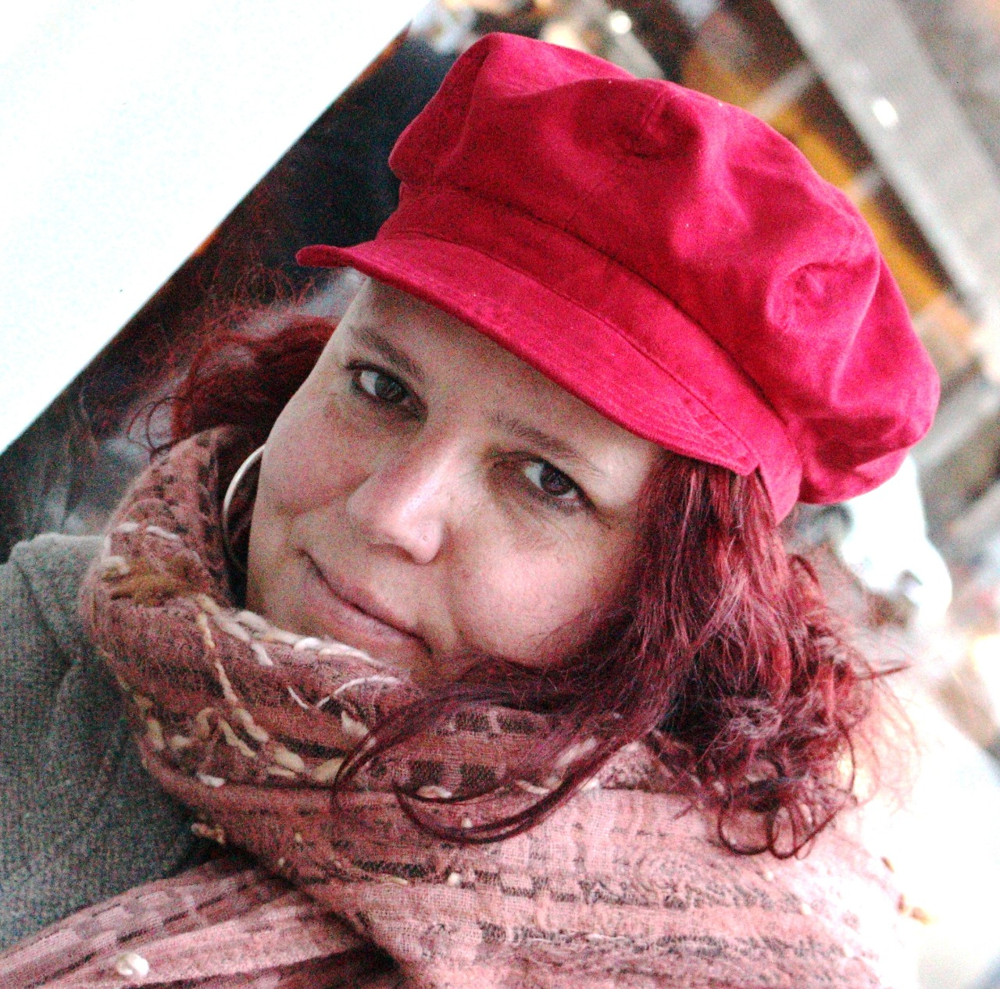

Vivo en Santos Lugares ,partido de Tres de Febrero Pcia de Buenos Aires Argentina ,estudie de muy joven
Bellas artes y me dedico actualmente a la escultura y a las artes plásticas ,soy docente de arte en tres
escuelas de Bellas Artes de Buenos Aires Argentina .
En el paseo de las artes de la localidad de Caseros hay una obra emplazada y realizada de forma colectiva y
otra de mi autoría .Recibí el 1er premio en el salón de pequeño formato en escultura de SAPI año 2012.
Participe junto al equipo Elemento Nieve ,desde el año 2007 hasta la actualidad en ,simposios y concurso
internacionales de escultura monumental en nieve en :Canadá ,China ,Italia ,EEUU,Rusia ,Japón y también en
el sur de mi País .Recibiendo un premio en 2014 ,en la ciudad de Chicago con la obra Sisterhood.
También participe en 2019 en un simposio internacional de murales en la ciudad de Tarija Bolivia ,Realizando
un mural escultórico junto a la artista Laura Medinilla, en la universidad .
Participe desde el año 2007 hasta la actualidad en ,simposios y concurso internacionales de escultura monumental en nieve en :Canadá ,China ,Italia ,EEUU,Rusia ,Japón y también en el sur de mi País .Recibiendo un premio en 2014 ,en la ciudad de Chicago con la obra Sisterhood
También participe en 2019 en un simposio internacional de murales en la ciudad de Tarija Bolivia ,Realizando un mural escultórico en la universidad .
En 2017 ,Participe en el simposio de arte y naturaleza Yatoo en Sud Corea .
Durante el 2020 ,fui seleccionada en el salón de arte textil Hilaku ,en Zaragoza España ,participe en diferentes
exposiciones virtuales en Brasil ,Bolivia ,Perú , India y Argentina.
2021 Fue seleccionado mi proyecto Nido Comunitario en Harinera ZGZ Zaragoza España .Fue realizado
durante el mes de junio 2021.
También este proyecto fue realizado en 2021 y 2022 en diferentes localidades de Argentina en Buenos Aires y
en Chubut.
La cámara Argentina de Cine selecciono la obra escultórica Observador 1 como premio a las productoras de
Cine Argentino 2020,2021,2022.
Fui reconocida con la Beca del Fondo Nacional de las Artes de Argentina en Tres de Febrero ,participo
activamente en simposios y exposiciones en diferentes partes de Argentina.
Recientemente recibi una Beca para desarrollar el proyecto Nido Comunitario en El Museo de Arte
Contemporaneo ,Nuria Rengifo en la sede Manu Candelas ,islas Galapagos Ecuador en enero y febrero de
2024.

•Profesora Superior de Escultura - Escuela Superior de ESBA Ernesto de la Cárcava.
Profesora Nacional de Escultura - Escuela Nacional de ESBA Prilidiano Pueyrredón
•Estudie de muy joven Bellas artes y me dedico actualmente a la escultura y a las artes plásticas ,soy docente de arte en tres escuelas de Bellas Artes de Buenos Aires Argentina .
•2021 -Fui invitada a participar como escultora invitada en el programa "Mundos paralelos " en el Canal Encuentro .
•Recientemente durante el mes de junio del 2021 ,realice mi proyecto seleccionada pór el ayuntamiento de la ciudad de Zaragoza España,”Nido Comunitario “ en Harinera ZGZ
•Participe desde el año 2007 hasta la actualidad en ,simposios y concurso internacionales de escultura monumental en nieve en :Canadá ,China ,Italia ,EEUU,Rusia ,Japón y también en el sur de mi País .Recibiendo un premio en 2014 ,en la ciudad de Chicago con la obra Sisterhood
•También participe en 2019 en un simposio internacional de murales en la ciudad de Tarija Bolivia ,Realizando un mural escultórico en la universidad .